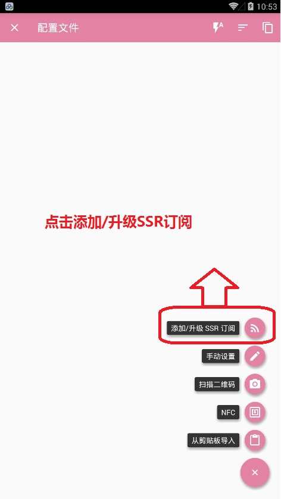

安装步骤
- 下载安装软件
- 打开APP
- 导入服务器列表,
- 选择要使用的服务器
- 打开控制开关连接使用
详细步骤
1:索要订阅地址URL,格式形如:http://127.0.0.1/getssr1?order_no=1234567,使用时候直接复制,不要复制乱码,URL以给你的为准
2:下载软件 并安装打开
3:删除默认的测试地址
4:点击右下角+,选择添加/升级SSR订阅,左滑删除内置订阅测试服务器,确认框，选择"与节点一起删除",然后点击"+"重新回到这里,添加新的URL地址

5:测试速度,选择一个服务器,然后打开总开关,查看速度,使用

注意事项
- 添加URL时候一定要把总开关关闭且要删除测试的URL,否则会一直提示等待中
- 如果出现大量服务器不可用，请手动删除服务器，然后更新订阅(重启/订阅地址那里再点一次确定并完成)
- ..........